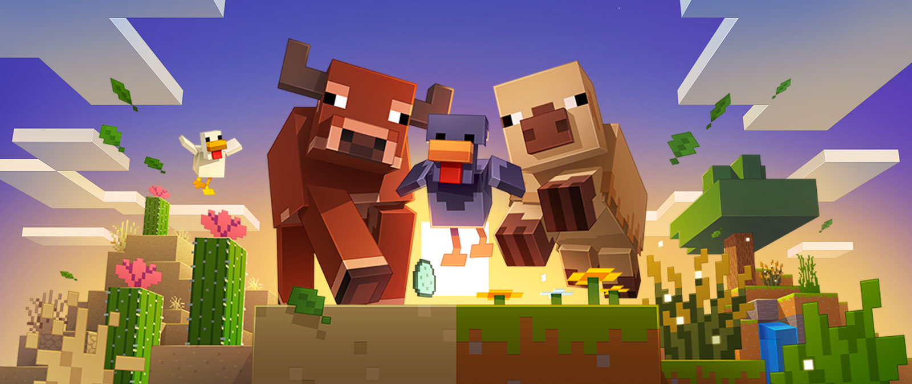

La più grande e up-to-date guida non ufficiale di Minecraft!

Scopri le novità dell'aggiornamento 1.21.5
- Aggiunte varianti fredde e calde per il maiale, la mucca e il pollo.
Aggiunte varianti fredde e calde per il maiale, la mucca e il pollo. Le pecore ora spaziano con colore lana a seconda del bioma in cui si riproducono. Aggiunte nuove varianti sonore per i lupi. Revisionato le immagini di ogni uovo di spawn per migliorare la leggibilità e l'accessibilità. Aggiunta generazione albero caduto. Aggiunto blocco Firefly Bush. Aggiunto blocco Foglia Lettiera. Aggiunto blocco Wildflowers. Aggiunto blocco Bush. Aggiunto blocchi Short Dry Grass e Tall Dry Grass. Aggiunto il blocco di fiori di cactus che possono crescere su blocchi di cactus. Aggiunto nuove particelle di foglie cadenti a tutti i blocchi di foglie che non li hanno già. Aggiunti nuovi suoni di blocco ambientale nei biomi del deserto e delle Badlands